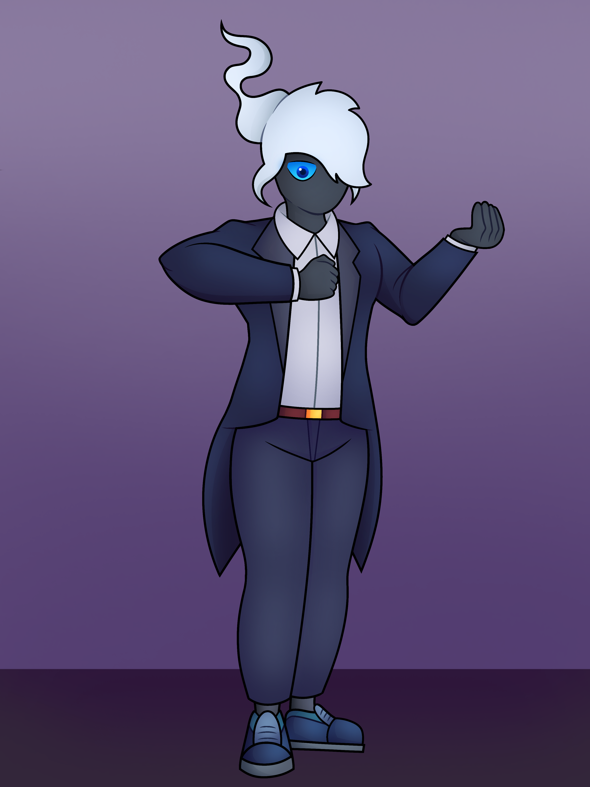

¡Buenas! Esta es mi web personal en el ambito profesional, me presento como alguien que actualmente se esta encaminando en el desarrollo de software enfocado mayormente en la programacion de archivos o bases de datos
Entre mis conocimientos hasta el momento, junto a las herramientas que he usado para aprender se pueden encontrar:
- Python / Thonny
- SQL / SSMS 20
- Java / Eclipse
- HTML, CSS y Javascript / VisualStudioCode
GitHub
Para tener un registro, algunos de mis proyectos personales junto a sus procesos de creacion se pueden encontrar por medio de mi perfil de GitHub, Son bienvenidos a echarle un vistazo:
GitHubSobre mi
Actualmente me encuentro estudiando la Tecnicatura de desarrollo de software en la Universidad Argentina De la Empresa (UADE)
Soy una persona tranquila y relajada, suelo pasar mi tiempo en casa, ya sea informandome sobre el ambito de la programacion y el entoorno.
Entre mis hobbys tengo el gusto por jugar algunos juegos, mayormente de celular. Hacer ejercicios en casa. Hacer dibujos digitales, enfocado mas en lo colorido
Algunos ejemplos de mis dibujos:


Contactos
En caso de tener interes en contactarme tengo disponibles los siguientes medios
(Adjuntar con asunto en el correo por favor).